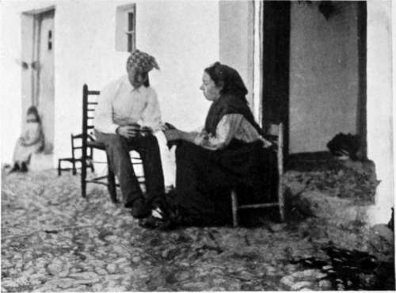
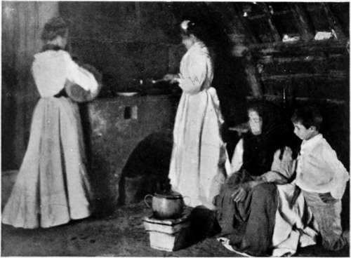

I. Birds'-Nesting In Spain
Description
This section is from the book "Bird-Hunting Through Wild Europe", by R. B. Lodge. Also available from Amazon: Bird-Hunting Through Wild Europe.
I. Birds'-Nesting In Spain
Early in March 1905, my friend M- and myself left London bound for Andalusia, intent on seeing and photographing as many as possible of the Eagles, Vultures, and marsh birds of that prolific region.
Nowadays, according to the latest scientific classification, the Eagles and birds of prey have been deposed from the place which they long held at the head of the bird world. However, in popular estimation they still hold the imagination as kings and princes of the air, in spite of occasional questionable proceedings on the part of some of them.
Though the Golden Eagle is not uncommon even now in some parts of Scotland, the sight of the king of birds is not by any means a matter of daily experience ; while the White-tailed Eagle is now but seldom met with.
It would therefore be better for any one who is desirous of having something more than a chance sight of a passing Eagle to travel to a land where the preservation of game is not so rigorously carried out, where the noblest forms of animal life are not yet mercilessly exterminated as vermin, and where the balance of Nature is the only factor in the abundance or scarcity of any species.
Luckily, it is not necessary to travel very far. Twenty-four hours will bring one to the Spanish frontier, and in Spain the present fauna is something like that which existed in England some four or five hundred years ago. There the wolves still take toll of the flocks and herds during the winter, and, not content with the sheep, occasionally devour the shepherd as well. The Brown Bear and the Lynx still exist in certain parts, the former in the north, the latter, with the Wild Boar, in the tangled thickets and wooded solitudes of the south. The Eagles breed in security in the rocky heights of the sierras, and in the immense pine-forests and cork-woods. The Griffon Vulture and the Egyptian Vulture nest in the precipitous heights of the sierras, and the rare Lammergeier, now almost extinct in Europe, still exists in greatly diminished numbers in the most remote and inaccessible parts of the mountains.
One journey into Spain in 1897, and the experiences with marsh birds there met with, had imbued me with a love of that captivating country, and a great desire to see more of it and its people. I believe the usual thing for everybody who has once visited Spain is never to be content until he has been again and yet again. Certainly for the naturalist there is hardly a richer field in Europe. For, as will be seen from its position on the map, it lies right in the track of the chief migratory route by which birds passing up from the African continent reach their breeding-places in Northern Europe, and its close propinquity to that great continent induces others, which otherwise would not be included among the list of European birds at all, to cross the straits at Gibraltar.
After an interesting but uneventful journey we duly arrived at Ronda, our first destination, and found very comfortable quarters at the fonda over the railway station.
We had hardly been in the place an hour, and were on our first tour of inspection into the country round the town, when we saw our first Griffon. The great bird came sailing along just over our heads before we had gone half a mile, almost within pistol-shot. It was the first I had seen in a wild state ; but though I have been able to observe hundreds since then, I do not think I have ever seen one at such close quarters except when I have been well hidden near to a carcase and perfectly invisible.
We had half hoped to find them nesting in the tajo, the precipitous height on the edge of which is perched the ancient town of Ronda, in such a fashion that some of the houses actually overhang the perpendicular cliff. From the back windows of those houses there must be a clear fall of at least 500 feet.
Standing on the picturesque bridge which spans the ravine at the end of the town we could see, circling and wheeling far below, numbers of Lesser Kestrels, Crag; Martins, and Pallid Swifts ; but there was no evidence of any nesting colony of Griffons; nor, though we made inquiries, did we find anybody who knew anything about them. We did indeed meet one ancient cazador, sun-dried and lean, who professed that he could take us to a nest; so we engaged him on the chance of his being able to make good his word, though without any great expectation of success. We arranged for him to meet us on the morrow provided with a sheep's head, intended to be used as a bait for the automatic electric camera.
Our friend was possibly a good sportsman in his time, but that must have been some years ago. He was a nice old fellow, and we took rather a liking to him ; but though he did his best he was very shaky, sometimes even wanting a helping hand over a difficult bit.
Fernando Flores and his wife
Interior of Spanish Choza
Under his guidance we went to the bottom of the cliff by a winding pathway ; and then followed a rocky stream, horribly polluted by the town sewage, until the valley opened out on one side, having a great semi-circular wall of rock on our right. The bottom of the valley was cultivated with olive groves and small fields, and from the perpendicular rock-face were occasional buttresses or spurs projecting into the valley. It was very evident that our guide knew of no nest, so one of these rock buttresses was selected on which to display the bait temptingly to any Vulture which might be soaring overhead. Up the rocky slope we scrambled, sometimes on all-fours, and holding on to tufts of herbage or jutting stones until we arrived at the top, from which there was a fine view of the smiling valley laid out before us like a garden. As quickly as possible we adjusted the electric battery and carefully covered over the camera, to the electric shutter of which the bait was attached by a fine but strong thread.
Continue to: